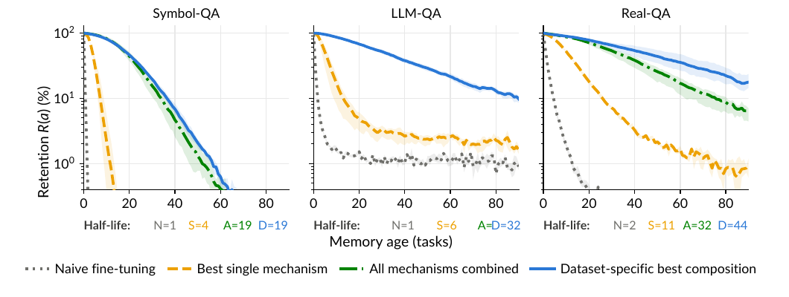
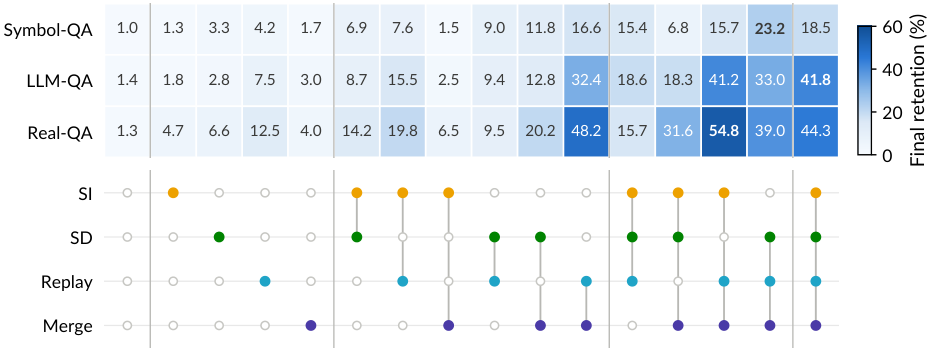

Composing Continual-Learning Mechanisms (Replay, Self-Distillation, Regularization, Merged LoRA) for Long-Horizon Retention
TL;DR
- Long-horizon memorization (Zhang, Zhang, Khashabi, Shu — Johns Hopkins, arXiv 2609.06986): a model learns 100 query–answer tasks by sequential SFT, keeps no raw examples, gets no task ID at inference, and must still answer old queries. Naive sequential fine-tuning retains 1.2% after 100 tasks; the best single continual-learning mechanism retains 8.1%.
- The paper organizes mechanisms into three anchors (data = generative replay, function = self-distillation, weight = importance regularization) and a low-rank allocation rule (shared vs. merged LoRA), then searches the combinatorial space with task-level successive halving and a \(2^4\) factorial. The all-anchors + merged-LoRA composition is the only method in the top 3 on every dataset and reaches 34.9% average final retention — 28× naive.
- Replay and merged LoRA are the core, with the largest main effects (+9.5 to +19.3 and +5.9 to +20.5 points) and a super-additive interaction on all three datasets. Composition extends memory half-life from 1–2 tasks to 19–44 tasks, but forgetting still continues — and general capability (GSM8K, MATH, MMLU-Redux) collapses for every method.
Why this matters
The memory debate in this tracker mostly lives in the harness layer: notes, skill libraries, retrieval, structured state. This paper asks the parametric question directly — can repeated weight updates be the memory? — and answers it with unusual methodological care: a proper benchmark for the setting, a search procedure that scales to 90 method configurations, and a factorial design that separates main effects from interactions rather than just reporting a winner.
The result is sobering for anyone hoping "just keep fine-tuning" is a memory system. But the structure of the finding matters for post-training more broadly: forgetting has several distinct sources, no single mechanism covers them, and the pair that matters most — replaying the previous model's own generations and folding each update into the dense weights before starting a fresh adapter — is cheap and generic. It is also a clean bridge to the distillation literature: the data anchor is literally self-distillation on the previous checkpoint's samples.
The core idea
Each task \(t\) supplies query–answer pairs \(\mathcal{D}_t\). The current-task loss is plain SFT (no query masking, because in test-time-training settings you often can't separate query from answer):
where \(p_\Theta\) is the autoregressive model and \(\Theta\) its parameters. Forgetting is controlled by adding three anchor terms, each preserving a different kind of prior information:
- Data anchor \(\mathcal{R}^{t}_{D} = \mathbb{E}_{z\sim Q_{t-1}}[\ell_D(\Theta, z)]\): train on sequences \(z\) sampled from a distribution \(Q_{t-1}\) representing earlier tasks. Here \(Q_{t-1}\) is a frozen copy of the previous model prompted with a single task-agnostic replay token (300 sequences generated per task), with the frozen model's soft next-token targets as the loss.
- Function anchor \(\mathcal{R}^{t}_{F} = \mathbb{E}_{x\sim\mu_t}[\,d(q_{t-1}(\cdot\mid x),\, p_\Theta(\cdot\mid x))\,]\): on current-task inputs \(x\), keep the new model's predictive distribution close to the previous model's \(q_{t-1}\) (Learning-without-Forgetting-style self-distillation; forward KL with temperature 5).
- Weight anchor \(\mathcal{R}^{t}_{W} = \tfrac{1}{2}(\vartheta-\vartheta^\star_{t-1})^{\top} H_{t-1}(\vartheta-\vartheta^\star_{t-1})\): a quadratic penalty pulling tracked parameters \(\vartheta\) toward their previous values \(\vartheta^\star_{t-1}\), weighted by accumulated importance \(H_{t-1}\succeq 0\) (Synaptic Intelligence or online EWC).
The second design axis is where updates live. With LoRA \(W = W_0 + \rho B A\):
Merged LoRA adapts ReLoRA's merge-and-reinitialize pattern to continual learning; both rules keep constant state size as tasks accumulate (unlike O-LoRA or OSRM, whose state grows).

Figure 1 from the paper (extracted from the PDF): retention \(R(a)\) as a function of memory age \(a\) (tasks since learning) on Symbol-QA, LLM-QA, Real-QA. Half-lives: naive 1/1/2 tasks; best single mechanism 4/6/11; all mechanisms combined 19/32/32; dataset-specific best composition 19/32/44. Composition changes the timescale of forgetting but every curve still declines.
How it works
Evaluation protocol. Domain-incremental: one task at a time, no task identity at inference, evaluate memorization on the training queries themselves. After learning task \(i\), test every task \(j \le i\), giving a temporal accuracy matrix
with \(\hat y_i\) the model's answer after task \(i\), plus Diag (accuracy right after learning) and Forget (average drop from peak to final).
Three 100-task datasets. Symbol-QA (10,000 random key–value associations), LLM-QA (10,000 LLM-generated fictional facts across 100 topics), Real-QA (5,000 natural QA pairs from ten public datasets, filtered to items the base model gets wrong in five samples). 100 examples per task (50 for Real-QA). Backbone: Qwen3-4B-Base; LoRA rank 32, \(\alpha=64\), all attention and MLP projections; 10 epochs per task at learning rate \(5\times10^{-4}\).
Task-level successive halving (TSH). Rankings after a few tasks may not predict rankings at 100. TSH starts with all 90 configurations — \(\{\varnothing, \text{online EWC}, \text{SI}\} \times \{\varnothing, \text{SD}_1, \text{SD}_2\} \times \{\varnothing, \text{Replay}_{1..4}\} \times \{\text{shared}, \text{merged}\}\) — keeps the top 45 after 10 tasks, 23 after 20, 10 after 50, and runs those to 100, ranking by mean final retention over three seeds. Search uses a development task order that differs from the evaluation order.
Factorial confirmation. With TSH-selected hyperparameters, all 16 combinations of {SI, SD, Replay, Merge} are run for 100 tasks × 3 seeds on the default order (21 methods per dataset including the O-LoRA / OSRM variants), and main and interaction effects are estimated.
for t in 1..T: # 100 tasks, no raw examples kept
prev ← frozen copy of current model (Θ_{t-1})
if data anchor:
Z ← prev.generate(replay_token, n=300, temp=1.5) # pseudo-sequences for old tasks
soft_targets ← prev.logits(Z)
if merged LoRA:
fold previous adapter into dense W_{t-1}; init fresh (A_t, B_t); reset optimizer
for epoch in 1..10:
for (batch_cur, batch_replay) in zip(D_t, Z):
L = SFT(batch_cur) # eq. (1)
L += w_D · KL(soft_targets ‖ p_Θ) on batch_replay # data anchor
L += λ_F · KL(prev(·|x) ‖ p_Θ(·|x)) on batch_cur # function anchor
L += λ_W · ½ (ϑ − ϑ*_{t-1})ᵀ H_{t-1} (ϑ − ϑ*_{t-1}) # weight anchor
step(L); update importance H (SI path integral)
evaluate M_{t,j} for all j ≤ t
Results
Compositions beat every standalone mechanism (Figure 3, Table 1). Best standalone final retention after 100 tasks: 4.2% (Symbol-QA), 7.5% (LLM-QA), 12.5% (Real-QA). Best compositions: 23.2%, 41.8%, 54.8%. The all-anchors + merged-LoRA method averages 34.9% and is the only composition in the top 3 on all three datasets, though the per-dataset winner differs (Symbol-QA prefers SD + replay + merge; LLM-QA the full stack; Real-QA SI + replay + merge).

Figure 3 from the paper: final retention (%) after 100 tasks for the \(2^4\) factorial, three-seed means. Filled markers = active mechanism; an inactive Merge marker means shared LoRA. Best compositions substantially outperform standalone mechanisms.
Replay and merged LoRA are super-additive. Main effects: replay +9.5 to +19.3 points, merged LoRA +5.9 to +20.5, both largest on every dataset, with a positive significant interaction everywhere. In the configurations without SI or SD, the standalone gains sum to 3.9 / 7.7 / 13.9 points over naive, but the pair together gives +15.6 / +31.0 / +46.9.
SI and SD are conditional. SD has a positive main effect everywhere but interacts negatively with replay on the natural-language datasets (less needed once replay is present). SI helps on LLM-QA and Real-QA, not on Symbol-QA, and interacts negatively with merged LoRA on Symbol-QA — a structural mismatch, since merged LoRA replaces the adapter coordinates that SI's importance estimates refer to.
Growing-state alternatives don't buy retention. Swapping merged LoRA for O-LoRA changes retention only slightly; sequential OSRM lowers it on all three datasets. But O-LoRA preserves substantially more general capability.
Everything forgets general capability. On GSM8K, MATH, MGSM, and MMLU-Redux all methods show catastrophic forgetting after 100 tasks; better memorization did not mean preserved reasoning.
How it connects
- memory-decoder — the other parametric-memory design: a swappable side-model rather than continual updates to the base. This paper is the evidence for why you'd want the memory separable: in-place SFT retains 35% at best and wrecks general capability.
- "Language Models Need Sleep: Offline Consolidation into Fast-Weight Memory" (tracked, no tutorial) — the same "consolidation" vocabulary; here consolidation is generative replay from the previous checkpoint, i.e. the model rehearses its own dreams before learning the next task.
- switch-distillation / tgopd-teacher-gated-opd — the data and function anchors are self-distillation; this paper is a continual-learning-flavored argument that distilling from your previous self is the cheapest anti-forgetting signal available.
- macaron-v1-continual-learning — mixture-of-LoRA as a product answer to the same problem; the O-LoRA result here (retention ≈ merged, capability much better) is the relevant data point for adapter-isolation designs.
- harness-continual-learning / mobilemem / agent-memory-second-half — the non-parametric camp. A retrieval system would score ~100% on this benchmark trivially; the interesting question this paper sets up but doesn't answer is when parametric retention is worth its cost.
- ttpo — test-time training on unlabeled context is a 1-task version of this setting; the no-query-masking choice here is explicitly motivated by test-time training.
Critical take
- Memorization on the training queries only. Evaluation reuses the exact training queries; paraphrase generalization is untested (the authors say so). 34.9% recall of verbatim associations is a low bar for "memory," and it means the headline can't be read as "the model learned the facts."
- The general-capability collapse is the real result. Every method catastrophically forgets on GSM8K/MATH/MMLU-Redux after 100 tasks. A memory system that destroys reasoning is not deployable; O-LoRA's better capability preservation at similar retention suggests isolation, not composition, is what protects the base model.
- No non-parametric baseline. Retrieval or in-context provision of the 100 tasks' data is the obvious alternative and would saturate this benchmark. The paper's framing ("information remains outside the model and must be supplied again") is a preference, not an argument; a cost/latency comparison would make the case.
- Replay is not free. 300 generated sequences per task plus soft targets from a frozen copy roughly doubles per-task compute and memory. Merged LoRA is nearly free, which makes it the more transferable takeaway.
- Method rigor is excellent — TSH, factorial design, seeds, search/eval order separation — and the negative SI × merge interaction diagnosis (importance estimates pointing at re-initialized coordinates) is the kind of mechanistic detail that saves others months.
If you remember three things
- Sequential SFT is not a memory: 1.2% retention after 100 tasks; the best single continual-learning trick gets 8.1%; composing complementary anchors with merged LoRA gets 34.9%.
- Generative replay from the previous checkpoint + merge-and-reinit LoRA is the super-additive core; weight regularization and self-distillation add conditional, dataset-dependent gains.
- Composition stretches forgetting's half-life from ~1 task to 19–44 tasks but does not stop it — and general capability collapses regardless, so parametric memory via continual SFT is still not a product.